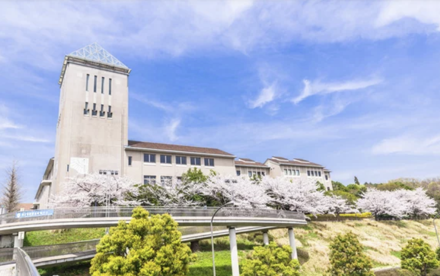
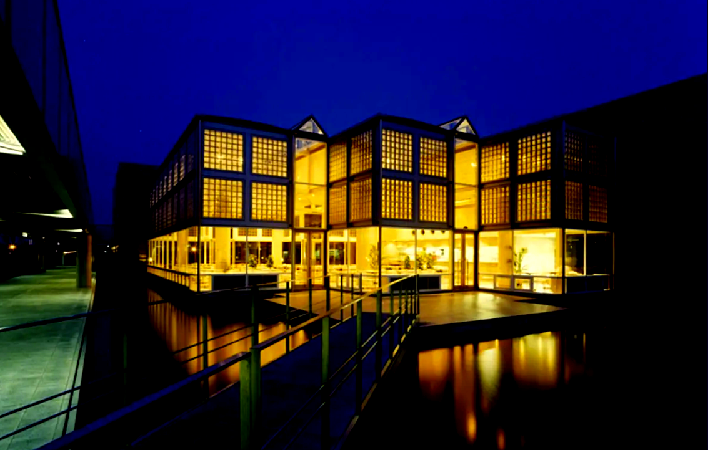

About Us
私たちについて
私たちは、予防・医療・介護のエキスパート集団であり、東京都立大学発のスタートアップです。
STARTUP FROM
東京都立大学
Tokyo Metropolitan University


Who we are
私たちの想い
私たちは、大学・研究機関、医療機関に所属し、臨床・教育・研究・社会実装の経験が豊富な研究者、臨床家らから構成される専門家集団です。
一次予防から医療、介護まで人々の生活を支援してきたリハビリテーションの専門家集団による人々の「健康づくり、予防、生活支援」に係る新たな取組みです。
科学的根拠に基づく実践と地域との連携により、すべての人が健やかに、そして長く「生きる」を享受できる社会の実現を目指します。
Directors
理事
 IA
IADirector
板垣 篤典
Itagaki Atsunori, Ph.D.
東京都立大学 健康福祉学部 助教
PT / 博士（障害科学）/ 認定PT（循環）
 KI
KIDirector
近藤 郁江
Kondo Ikue, MSc
目白大学 保健医療学部 言語聴覚学科 助教
ST / 認定ST（失語・高次脳機能障害）/ 公認心理師
 KY
KYDirector
木村 鷹介
Kimura Yosuke, Ph.D.
東洋大学 生命科学部 生命医工学科 准教授
PT / 博士（リハビリテーション科学）/ 専門PT（神経系）
 IN
INDirector
今川 記恵
Imagawa Norie, Ph.D.
県立広島大学 保健福祉学部 助教
ST / 博士 / 聴覚障害・人工内耳専門
 ST
STDirector
佐藤 聡見
Satoh Toshimi, Ph.D.
福島県立医科大学 保健科学部 講師
PT / 博士（障害科学）/ 専門PT（心血管）
 KT
KTDirector
筧 智裕
Kakehi Tomohiro, Ph.D.
国際医療福祉大学 成田保健医療学部 講師
OT / 博士（医学）/ 認定OT / 心臓リハ指導士
Advisors
アドバイザー
SM
鈴木 瑞恵
Suzuki Mizue, Ph.D.
ST, Ph.D.
SS
澤野 晋之介
Sawano Shinnosuke, Ph.D.
MD, Ph.D.
 AY
AY